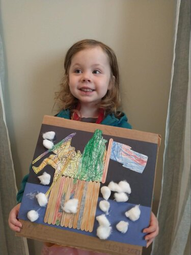

This tale describes the iconic moment in America’s War of Independence – the moment when we realized we could prevail over one of the greatest military powers on earth, reclaim the rights we’d lost, and begin the long, hard work of building a new nation. “Life, Liberty, and the Pursuit of Happiness” and the hopes of the revolution all hinged on these battles. Though not of tactical importance as military victories they were enormously important politically, coming at a time early in the war when not only Washington’s troops but all Americans were deeply discouraged after losing the critical battles in New York.
The fabled American work ethic is a prominent part of the story. It’s Christmas Eve when most people are home with their families. Instead, Washington’s army is ferrying two thousand men, horses, and cannon(!) across a river so swollen with ice that two other regiments, crossing at other locations, fail to make it across. After working all night, Washington’s army then marched nine miles. All before the fighting even starts.
The aftermath of the battle highlights another important theme. Washington’s troops are all volunteers, most of them enlisted for very short service stints of 2-6 months. Washington must continually appeal to their patriotism to get them to voluntarily re-enlist. When he issued a call for additional volunteers for the Princeton battle, they came from all around to risk their lives – an extraordinary example of the power of voluntary associations and of the devotion they felt for the cause they were fighting for: liberty. Liberty was worth the effort, the risk, and all the hardship.
This story is a little “text heavy” for younger kids. To help keep them engaged, consider adding the “Find Washington” and “Focal Point” activities (described below) to your readings. You might also add the coloring activity from Arts & Crafts below and the Stuffed Animal Attack.

Title: When Washington Crossed the Delaware
Author: Lynne Cheney
Illustrator: Peter M. Fiore
Year Published: 2004
Length: 40 pages
Below is one suggestion for your week with the book When Washington Crossed the Delaware. Please experiment with what works for your family! (Note: not all activities are included in the suggested sample week below).
toc: "Songbook: _Yankee Doodle_"
time: 5 minutes
freq: daily
Yankee Doodle went to town A-riding on a pony, Stuck a feather in his cap And called it macaroni.
Yankee Doodle keep it up, Yankee Doodle dandy, Mind the music and the step, And with the girls be handy.
This patriotic song was originally written by a British soldier to mock colonial American troops. However, by the time of the American Revolution it had become a source of pride to the Americans. Almost two and a half centuries later, it requires a bit of work to understand the original meaning.
Yankee refers to Americans, though its origin is unclear. Doodle meant a fool or simpleton, while a “dandy” means someone who dresses in an overly stylish manner. And while we tend to think of macaroni as a variety of noodle (which coincidentally rhymes with doodle), back in the 18th century macaroni was a type of fashionable wig. The British were mocking the Americans by suggesting that they were simpletons who thought they could appear stylish by sticking a feather in their caps.
Yankee Doodle’s simple tune and structure encouraged people to write additional verses for it — which the British did. However, in 1776, Edward Bangs, a Minuteman, wrote 15 new verses for it. Other verses were added and changed over time; more than 100 were known by 1830. Over the course of the Revolution, Yankee Doodle became the unofficial anthem of the army; there are reports that it was played when the British surrendered at both Saratoga and at Yorktown.
This version on YouTube combines four verses with some fun visuals. This version has some different verses, with lyrics. This version is sung by the Cedarmont Kids in period costumes. Finally, in the tradition of Yankee Doodle, we made up our own verses to help kids remember the timeline of American History. You can find it in our Review Module.
time: 30-40 minutes
prep: 10 minutes
supplies: popsicle sticks, cotton balls, glue, construction paper,
crayons, scissors
On Christmas night, 1776, General Washington led twenty-four hundred men, the main body of his army, to a crossing point about nine miles upstream from Trenton.
One of the most iconic images in American history is that of Washington crossing the Delaware. You can expose younger children to this image by downloading and printing a sheet that they can color with their crayons. You can find a couple of examples on the internet here or here. Older kids might enjoy this mixed-media art project:
Depending on the age of the child they may need help with cutting and/or gluing. My three year old loved coloring craft sticks and sticking cotton balls onto the sheet. Both the five-year-old and three-year-old liked adding the coloring sheet of Washington to the picture (which made it more exciting).

toc: "Geography: Maps & Distances"
time: 15 minutes
supplies: U.S. map puzzle
In early December the Americans made it across the Delaware River into Pennsylvania. Under General Washington’s orders they had taken every boat they could find with them, so they knew they were safe from the British for a while.
Examine a map of the Delaware River (use the one on the inside of the cover). How wide was the river where Washington and his army crossed? Use fingers or string to measure the distance using the scale bar. Why did they choose to cross where they did? How far did they have to hike to Trenton once they crossed the river? Use the string to measure the distance. Now, measure the distance from Trenton to Princeton. Use a map program (e.g., Google Map, Apple Map) to show how long it would take to travel the distance by car. How long did it take Washington’s army to march to Princeton?
time: 5-10 minutes
freq: daily
These are the times that try men’s souls.
Thomas Paine is most famous for his book Common Sense that helped spark the revolution. However, his work The American Crisis contains one of the most memorable lines in American history: “These are the times that try men’s souls.” Ask your child(ren) to memorize this line and repeat it each day of the week before or after each reading. Be sure to place the line in context, explaining why Americans were so discouraged at this point in the War of Independence. Older children may want to add the second, longer line: “The summer soldier and the sunshine patriot will, in this crisis, shrink from the service of their country; but he that stands it now, deserves the love and thanks of man and woman.”
time: 20-30 minutes
prep: 10 minutes
The Americans retreated through cold and rain. Many had no jackets to keep them warm. Many had no shoes and marched with rags wrapped around their feet. Everyone was hungry.
Fire cakes were cooked by the fire or in the ashes during the Revolutionary War. Once made, the fire cakes could keep for a month which was convenient for soldiers who may not easily be able to cook every day. The recipe below will make 8-15 biscuits depending on their size.

time: 20-30 minutes
prep: 10 minutes
supplies: foam paper plate, cake pan, liquid soap, ice cubes
The night was cold, and the men faced a difficult crossing. They had to break through ice to get the boats into the river. They had to fend off large chunks of floating ice once they were underway.
There are several videos on the internet that show you how to build a miniature boat powered by a bit of soap (here’s one and here’s another). For this activity you will want to work with your child(ren) on the following steps:

Crossing the “Delaware”
toc: "Re-enactment: Surprise Attack!"
time: 20 minutes
prep: 10 minutes
supplies: Nerf guns or other harmless projectiles
When the Americans encountered the first Hessians, it was clear the surprise had worked. The startled Hessians retreated.
There are many creative ways to simulate Washington’s surprise attack on the Hessians. Ours was a multi-generational affair. Parents told the kids that the grandparents were planning a surprise attack. They barricaded the front door and kept a lookout through the front window. Text messages apprised them of progress (“Washington is crossing the Delaware.” “Washington’s army is on the march.”) while the parents kept anticipation high. Grandparents entered through the back door, approached from the rear, and surprised the kids by shouting “The Hessians!” and “Attack! Attack!” Nerf weaponry was involved (but rubber bands can also be fun). Stocking (or bare) feet and blue cloaks/coats were worn to remind us of Washington’s army.
Surprise was total. After the shock wore off (and they had surrendered), everyone retired to the living room for target practice with the nerf guns (and their first lesson in range safety). At the end of the evening, the five-year-old, with a big smile, said “You really surprised us!” The three-year-old? “I liked the attack.”
Don’t be surprised when your kids ask for another Surprise Attack or reverse the Surprise Attack a little later…
toc: "Re-enactment: Stuffed Animal Attack!"
time: 15 minutes
On Christmas night American troops would cross the Delaware River in several different places. Before dawn on December 26 they would attack the Hessians at Trenton, New Jersey.
Have your child(ren) use stuffed animals, figurines, or other small toys to act out the crossing of the Delaware, the march, and the surprise attack. A small tray, cake pan, pillow, book, or piece of cardboard can be the boats that the stuffed animals are loaded onto and a blanket can represent the river. Then the stuffed animals (or figurines) march from the boats in a line to where other stuffed animals (or figurines), representing the Hessians are sleeping and mount an attack. Don’t forget to have stuffed animal guards posted for the Hessians! Your child(ren) can perform the story on their own after a reading or act it out as you read the story.
time: 10 minutes
But 300 miles of lakes and rivers, hills and glades, and mountain forests separated Boston from Fort Ticonderoga. Dragging the cannons the whole, hard way in winter was impossible. Wasn’t it? Henry Knox said he could do it.

Title: Henry and the Cannons
Author & Illustrator: Don Brown
Year Published: 2013
Length: 32 pages
Washington’s victory at Trenton was a turning point in our fight for independence. His stunning victory at Yorktown marked the end of the British invasion. But what happened in the beginning? Henry and the Cannons tells the story of Washington’s first command as Commander-in-Chief of the Continental Army.
The British had complete control of Boston and its harbor when the Continental Congress appointed Washington general over the Continental Army in July of 1775. Washington first had to recruit an army and then figure out how to dislodge the British without destroying Boston.
Washington met this challenge by sending Colonel Henry Knox to Fort Ticonderoga, hundreds of miles away, to bring back the cannons that forced the British to withdraw. Knox accomplished this feat in the middle of winter — a logistics miracle demonstrating the work ethic of the American soldier. Knox would be promoted to Brigadier General after he succeeded at another wintry logistics test: getting Washington’s men, horses, and cannon across the icy Delaware River for the Battle of Trenton.
This story echoes many of the themes present in When Washington Crossed the Delaware. Despite the seemingly impassable winter obstacles, Henry Knox volunteered to retrieve the cannons, and then he and his men persisted in overcoming multiple setbacks to finally bring them safely to Boston. What drove them? They were fighting for liberty.
time: 10 minutes
Every man will sit under his own vine and under his own fig tree; and no one will make them afraid: for the Lord Almighty has spoken. (Micah 4:4)
The Bible was so universally known in Washington’s time that many times it would be quoted without attribution. People assumed you knew they were quoting the Bible.
Washington’s writings contain hundreds of biblical references, quotations, proverbs and allusions. His favorite scripture, based on the number of times he referenced it in his writings, was Micah 4:4. Washington referenced this verse almost 50 times in his writings. Ask your child(ren) why this might be the favorite verse of the Commander-in-Chief of the Continental Army for seven long years?
time: 10 minutes
But Washington had seafarers with him that night who knew how to navigate treacherous waters.
The author uses some words associated with armies and battles that may be unfamiliar to your child(ren): rebels, patriots, treacherous, ammunition, artillery, regiment, musket, rally. Try introducing a couple of the new words each day. Before you start reading, introduce the words you’ve selected for the day, define them, and then point them out during the reading.
time: 10 minutes
The summer soldier and the sunshine patriot will, in this crisis, shrink from the service of their country.
The author also includes idioms that may be worth pointing out to older children who wonder what the author means by “summer soldier” and “sunshine patriot.” Idioms are words, or a group of words, that have a figurative meaning that is not obvious from its literal definition. Authors use these figures of speech because their descriptive imagery conveys a more vivid meaning to the reader. Idioms are metaphorical and because the metaphors are often localized, people from different regions may not immediately grasp their meaning. Foreigners learning a new language are often baffled by idioms. What did Thomas Paine mean when he referred to some people as “summer soldiers” and “sunshine patriots”?
time: 5 minutes
“The force of the current, the sharpness of the frost …, the ice which made during the operation … rendered the passage of the river extremely difficult.” JAMES WILKINSON MAJOR, CONTINENTAL ARMY
As you read through the story, notice that each page has a sentence in “quotation marks.” The words between the quotation marks are the actual words that historical people spoke or wrote. Notice how each quotation is attributed to a specific person, and some include additional information about the speaker, in case the reader is unfamiliar with the person being quoted. Notice also the use of fonts: italics for the quotation, small capitals for the speaker (and even a smaller size font for the description of the person).
time: 10 minutes
Most of Washington’s men had the right to go home at the end of the year, but Washington needed them to stay.
History comes alive when you can make a personal connection to historical events. Did any of your ancestors serve in the Continental Army during the War of Independence? Or were they Loyalists, supporting the British? It’s not unusual to have ancestors on both sides of a conflict. If your family immigrated to America after the War of Independence, where were they living during this time period? When and why did they decide to come to America? Share their stories with your children.
time: 5 minutes
Even when the struggle seemed hopeless, George Washington did not give up.
This activity can be fun for younger kids. Ask them if they can find George Washington in each picture (he is not in every one of them).
time: 10 minutes
He called a meeting of his generals and worked out a plan.
The focal point of a painting is the area that the artist wants the viewer to pay the most attention. A variety of techniques are used by artists to draw the viewer’s eye naturally to the area the artist considers most important or most interesting. These techniques include composition, converging lines, detail focus vs. blurring, color contrast. Select some of your or your child(ren)’s favorite paintings in the story and ask them to find the main focal point. Then see if you can tell what technique the artist used to draw your eye to the focal point.
Younger children may just enjoy comparing the red professional coats of the British army to the blue ragtags of Washington’s Continental army as they page through the story.
time: 10 minutes
freq: daily
George Washington was discouraged. How could the Americans, who were mostly new to fighting, ever hope to defeat the well-trained redcoats?
As above, discuss with your child(ren) why Washington’s troops and all Americans were discouraged. What raised the spirits of the soldiers (and the country)? Where did they find encouragement? You might ask your child(ren) if they remember a time when they were cold, tired, and hungry.
As an activity, ask your child(ren) to encourage a family member or friend at least once a day for the rest of the week (perhaps set up a checklist or star chart to mark each occasion). Work on developing the habit of encouraging one another, especially within your family. You might want to share with them the Bible verse “Encourage one another and build one another up” (1 Thessalonians 5:11).
time: 10 minutes
Drums rolled. A few of the men stepped forward, then more, and then more. Many of Washington’s battle-tested soldiers resolved to stay at his side.
Washington’s army consisted of men who had voluntarily enlisted to fight for their country’s freedom. Most of the enlistments were for very short terms, two to six months. Ask your child(ren) what they would like to do to help the family. Have a list of tasks around the house they could help with that are age appropriate (e.g., pick up their room, set the table, put their toys away, fold their clean clothes). Perhaps make it a “short-term enlistment” for just a week. Construct a checklist or star chart so they can check off each day they perform their volunteer activity. Perhaps ask them to extend their voluntary enlistment at the end of the period, now that they are a “battle-tested veteran,” to help the family just as Washington asked his volunteer army to extend their commitments to help their country.
{kind=link}
{kind=link}